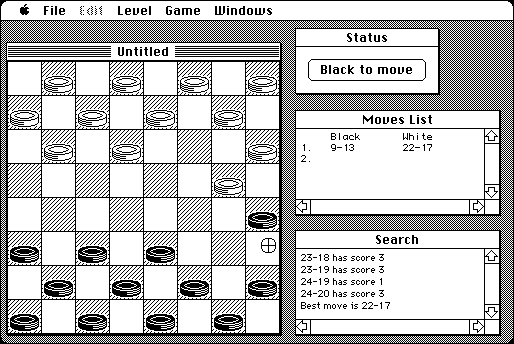

Download
mac-checkers.zip (25K) MacCheckers 1.0 repackaged into a zipped hfs disk image and checksum file. The disk image can be mounted with Mini vMac.
mac-checkers.hqx (29K) MacCheckers 1.0 in the original format.
copyright: John Thornley, David Sinclair
mod date: Jan 18, 1995
license: freeware
official url :
Dejal - Classic - Miscellaneous Tools
Checkers game. Can save game, and edit board. Captures are forced, which is not how I remember playing checkers.

If you find these downloads useful, please consider helping the Gryphel Project, which hosts them.
Here are the md5 checksums for the downloads, signed with Gryphel Key 5:
--------- GRY SIGNED TEXT --------- 6449aee218d3d1b25ac596c16caf9d14 mac-checkers.zip c8d377e9cdda46bd4ab0f7e6a865394e mac-checkers.hqx ------- BEGIN GRY SIGNATURE ------- Gry/4Xa8CFcUzxdN/H4unv/Fb3hVyWwCKMa36k1oZ75DyrJUjqsN8Fs/cVj7GL5q mlDLq0h3grvA+EyqTos779+TcLhRwF5014sv+NOLd0lh7xlRos+CdXpoatFyKa4R X9zXAZc7VY0cDRLSY5yBel3eFEbvdrOwlvJ/3pxobmWlRyi27/vwNRI/429Hh52n -------- END GRY SIGNATURE --------